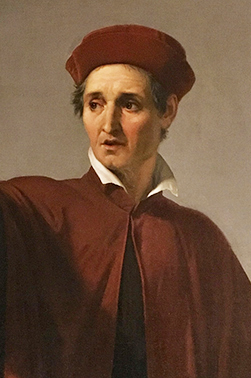

1250s |
HOME PAGE |
Leonardo Bruni was an Italian historian who lived from 1370 to 1444. He was the first historian who organized history under three different classes: Antiquity, Middle Ages, and Modern. Some of Bruni's famous work include a biography of Cicero and a book he wrote upon the history of the Florentine people.
